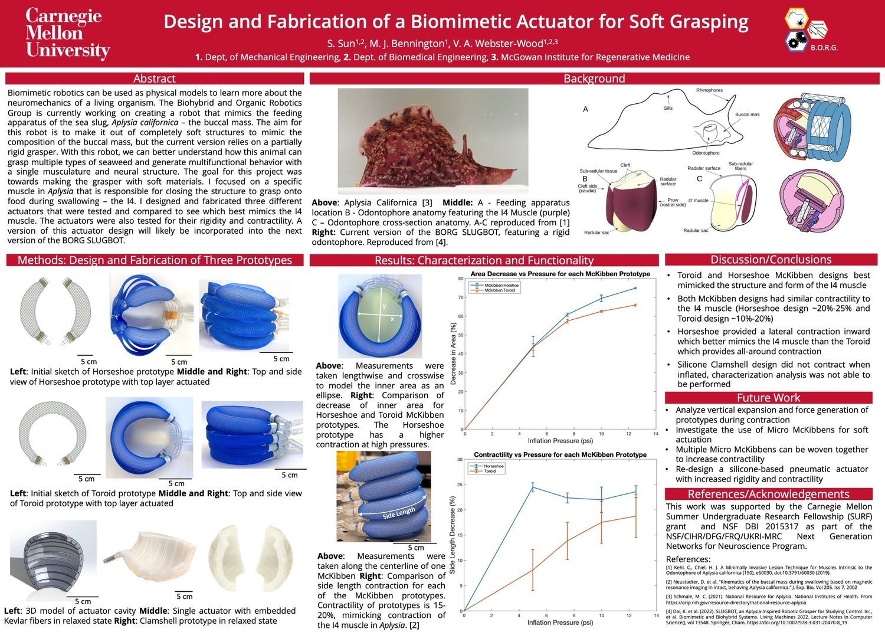

Bioinspired Actuators
I started this project utilizing my grant from the Summer Undergraduate Research Fellowship. As a research assistant for the CMU Biohybrid and Organic Robotics Group, I had exposure to muscle models of Aplysia californica and was curious about utilizing our Aplysia studies to design new soft-robotic actuators.
I defined this project around the I4 muscle of Aplysia’s feeding apparatus, with the goal of integrating my actuator into the existing lab project, SlugBOT. After exploring various McKibben and silicone-based actuator designs, I analyzed the contractility of these prototypes and validated the designs as models of the I4.
Moving forward, I plan to investigate woven Micro-Mckibben actuators (~1cm diameter) to reflect muscle fiber structure. I believe that there are possible applications of this technology in prosthetic robotic developments.
